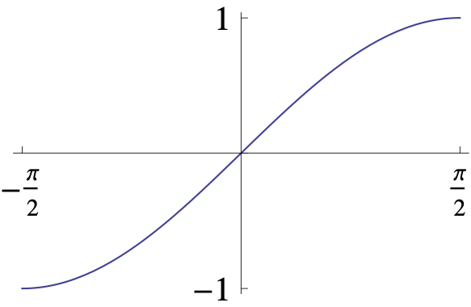

2 Predicate Logic
Predicate logic is a more powerful system of reasoning that can be used to express more complicated ideas. In predicate logic, we can make statements about things that have certain properties. For example, consider the following argument:
Every animal that is a mammal has fur. Rover is a mammal. Therefore, Rover has fur.
This argument is also valid because it follows the rules of predicate logic. In this case, the first statement is called the “universal quantifier,” the second statement is the “existential quantifier,” and the last statement is the “conclusion.”
Variables in mathematical statements can be quantified in different ways. First, the symbol \(\forall\) is called a universal quantifier and is used to express that a variable may take on any value in a given collection. For example, \(\forall x\) is a symbolic representation for any of the following
- For any \(x\), …
- For every \(x\), …
- For all \(x\), …
- Given any \(x\), …
- If \(x\) is any …
Another quantifier \(\exists\) is called an existential quantifier and is used to express that a variable can take on at least one value in a given collection. For example \(\exists x\) is a symbolic representation for any of the following
- For some \(x\), …
- There exists an \(x\), …
- There is an \(x\), …
- There are \(x\), …
Mathematical statements are sometimes written with hidden quantifiers and so you may want to rephrase a given statement before writing it in symbolic form or before applying a logic rule. For example, what are the hidden quantifiers in the following statement?
In 1941, Joe Dimaggio had a 56-game hitting streak.
Namely,
In 1941, there existed a sequence of 56 consecutive games, such that for all games in this sequence, there was at least one at-bat in which Joe Dimaggio got a hit.
In this section, we discuss quantified statements and logic rules for working with them. Here are some examples of logic rules.
Logic Rule 1: The negation of the statement: \[ \forall \, x, P(x) \] is the statement \[ \exists \, x, \neg P(x) \]
Logic Rule 2: The negation of the statement:
\[ \exists \, x, P(x) \] is the statement \[ \forall \, x, \neg P(x) \]
Before we discuss quantifiers in detail, let’s first understand what \(P(x)\) means.
2.1 Propositional Functions
Notice that the statement
\(x\) is less than 5
has two parts. The first is the variable \(x\) which is the subject of the statement. The second part, is less than 5 is called the predicate and refers to a property that the subject of the statement can have. We denote the statement “\(x\) is less than 5” by \(P(x)\), where \(P\) denotes the predicate and \(x\) is the variable. Once a value as been assigned to the variable \(x\), the sentence \(P(x)\) becomes a proposition and has a truth value. For instance, what are the truth values of \(P(1)\) and \(P(2)\)?
Definition 2.1 A propositional function in the variable \(x\) is a sentence \(P(x)\) about \(x\) that becomes a statement when \(x\) is given a particular value.
In general, a sentence involving the \(n\) variables \(x_1, x_2, \ldots, x_n\) is denoted by \[ P(x_1, x_2, \dots, x_n). \] A statement of the form \(P(a_1, a_2, \ldots, a_n)\) is the value of the propositional function \(P\) at the \(n\)-tuple \((a_1, a_2, \ldots, a_n)\) and \(P\) is called the predicate.
Example 2.1 Let \(P(x,y,z)\) denote the sentence “\(x-y=z\)”. What are the truth values of the propositions \(P(2,3,-1)\) and \(P(5,0,7)\)?
Solution. The statement \(P(2,3,-1)\) corresponds to \(2-3=-1\) which is true; and the statement \(P(5,0,7)\) corresponds to \(5-0=7\) which is false.
2.2 Universal Quantifier
Definition 2.2 The statement \[ \text{For all $x$, $P(x)$.} \] is symbolized by the formula \[ \forall x, P(x). \] The symbol \(\forall\) is called an universal quantifier and translates as “for all”.
Is this statement true or false?
Example 2.2 Express the statement
Every student in this class has studied calculus. as a universal quantification.
Solution. Let \(P(x)\) denote the statement: “\(x\) has studied calculus”. Then the statement can be written \(\forall \, x, P(x)\) where the universe of discourse is the set of students in this class.
Example 2.3 Let \(P(x)\) be the statement “\(x>3\)”. What is the truth value of the quantification \(\forall x, P(x)\), where the universe of discourse is the set of real numbers?
Solution. Notice that \(P(x)\) is not true for all real numbers \(x\), since we can find one value in the universe of discourse, say \(2\), and \(P(2)\) is false. Consequently \(\forall x, P(x)\) is false.
When the universe of discourse is finite, say \(x_1, x_2, \ldots, x_n\), then the universal quantification \(\forall x, P(x)\) has the same truth value as the conjunction \[\begin{equation} P(x_1)\land P(x_2) \land \cdots \land P(x_n) \end{equation}\] since \(P(x_1)\), \(P(x_2)\), …, \(P(x_n)\) are all true if and only if the conjunction is true.
Example 2.4 What is the truth value of the statement \(\forall x, P(x)\) where \(P(x)\) is the statement
\(x^2<5\)
and the universe of discourse is the set of the negative integers not less than \(-3\)?
Solution. The statement \(\forall x, P(x)\) is the same as the conjunction \[ P(-3)\land P(-2)\land P(-1) \] since the universe of discourse consists of the integers \(-3, -2\), and \(-1\). Since \(P(-3)\) is false, it follows that the statement \(\forall x, P(x)\) is false.
2.3 Existential Quantifier
Definition 2.3 The statement \[ \text{There exists an $x$ such that $P(x)$.} \] is symbolized by the formula \[ \exists x, P(x). \] The symbol \(\exists\) is called an existential quantifier and translates as “there exists”.
Notice that P(1) is also true and that \(1\) is a rational number.
Example 2.5 Let \(P(x)\) denote the statement
\(x<5\)
What is the truth value of the quantification \(\exists x, P(x)\), where the universe of discourse is the set of rational numbers?
Solution. In order for the statement \(\exists x, P(x)\) to be true, we need to demonstrate at least one value \(x\) in the universe of discourse where \(P(x)\) is true. Since \(2\) is a rational number number and \(P(2)\) is true, we see that \(\exists x, P(x)\) is true.
What if we change the universe of discourse to the set of complex numbers?
Example 2.6 Let \(P(x)\) be the statement
\(x^2=-1\)
What is the truth value of the quantification \(\exists x, P(x)\), where the universe of discourse is the set of rational numbers?
Solution. Since \(x^2=-1\) is false for every rational number \(x\), the existential quantification of \(P(x),\) namely \(\exists x, P(x)\) is false.
When the universe of discourse is finite, say \(x_1, x_2, \ldots, x_n\), then the existential quantification \(\exists x, P(x)\) has the same truth value as the disjunction \[\begin{equation} P(x_1)\lor P(x_2) \lor \cdots \lor P(x_n) \end{equation}\] since at least one of \(P(x_1)\), \(P(x_2)\), , \(P(x_n)\) is true if and only if the disjunction is true.
Example 2.7 What is the truth value of \(\exists x, P(x)\) where \(P(x)\) is the statement
\(x^4<1\)
and the universe of discourse consists of the negative integers not less than \(-5\)?
Solution. Since the universe of discourse is \(\{-5, -4, -3, -2, -1\}\), the proposition \(\exists x, P(x)\) is the same as the disjunction \[ P(-5)\lor P(-4)\lor P(-3)\lor P(-2)\lor P(-1). \] Since \(P(-5), P(-4), P(-3), P(-2)\), and \(P(-1)\) are all false, it follows that the statement \(\exists x, P(x)\) is false.
2.4 Uniqueness Quantifier
What are other ways of expressing his quantifier in English?
Definition 2.4 The statement \[ \text{There exists a unique $x$ such that $P(x)$.} \] is symbolized by the formula \[ \exists! \, x, P(x). \] The symbol \(\exists!\) is called an uniqueness quantifier and translates as “there exists a unique”.
Example 2.8 What is the truth value of \(\exists! \, x, P(x)\) where \(P(x)\) is the statement
\(x^4\leq 1\)”
and the universe of discourse consists of the negative integers not less than \(-5\)?
Solution. The universe of discourse is the set \(\{-5, -4, -3, -2, -1\}\) and since \(P(-5), P(-4), P(-3), P(-2)\) are all false and \(P(-1)\) is true, we see that exactly one, namely \(P(-1)\) is true. Hence, it follows that the statement \(\exists!\, x, P(x)\) is true.
2.5 Negating Quantifiers
Now we discuss the two logic rules mentioned above.
Theorem 2.1 (Negating Quantifiers) Let \(P(x)\) be a propositional function and let \(A\) be a set. Then,
- \(\neg [\forall x\in A, P(x)]\) is a true proposition if and only if \(\exists x\in A, \neg P(x)\) is a true proposition.
- \(\neg [\exists x\in A, P(x)]\) is a true proposition if and only if \(\forall x\in A, \neg P(x)\) is a true proposition.
Proof. We prove (2) and leave the first part as Exercise 2.7. Suppose that \[\neg [\exists x\in A, P(x)]\] is a true proposition. Then there is no \(x\) in \(A\) such that \(P(x)\) is true. Thus, for each \(x\in A\), \(P(x)\) is false. Therefore, \(\neg P(x)\) is true for every \(x\) in the set \(A\), and so \(\forall x\in A, \neg P(x)\) is a true proposition.
Conversely, assume that \(\forall x\in A, \neg P(x)\) is a true proposition. Then \(\neg P(x)\) is a true statement for every \(x\) in the set \(A\). So \(P(x)\) is false for every \(x\) in the set \(A\); that is, there does not exist an element \(x\) of the set \(A\) such that \(P(x)\) is true. Therefore, we see that \(\neg [\exists x\in A, P(x)]\) is a true proposition.
Example 2.9 Write the negation of the statements
- \(\forall \, n\in \mathbb{N}, n^2-n+3=0\)
- \(\exists \, n\in \mathbb{N}, n^2-n+3=0,\)
and for each one, explain whether it or its negation is true.
Solution. By Theorem 2.1,
\[
\forall \, n\in \mathbb{N}, n^2-n+3=0
\quad \text{ has negation: } \quad
\exists \, n\in \mathbb{N}, n^2-n+3\neq 0
\] and \[\begin{equation}
\exists \, n\in \mathbb{N}, n^2-n+3=0
\quad \text{ has negation: } \quad
\forall \, n\in \mathbb{N}, n^2-n+3\neq 0
\end{equation}\] The first statement \(\forall \, n\in \mathbb{N}, n^2-n+3=0\) is not true simply note that when \(n=2\), then \((2)^2-(2)+3=5\neq 0\). Therefore its negation must be true. The second statement \(\exists \, n\in \mathbb{N}, n^2-n+3=0\) is false since there does not exist \(n\in \mathbb{N}\) such that \(n^2-n+3=0\).
Example 2.10 Write the negation of the statement \[ \exists !\, n\in \mathbb{N}, n^2-n+3=0. \]
Solution. We want to write negation of the statement
There is one and only one \(n\in \mathbb{N}\) such that \(n^2-n+3=0\).
The negation is “There is no \(n\in \mathbb{N}\) such that \(n^2-n+3=0\) or there is more than one \(n\in \mathbb{N}\) such that \(n^2-n+3=0\)”. Another way of saying this is “For each \(n\in \mathbb{N}\), \(n^2-n+3\neq 0\) or there exists at least two natural numbers \(n\) such that \(n^2-n+3=0\).”
2.6 Counterexamples
How can we show that a statement of the form \(\forall x, P(x)\) is false? Or equivalently, how can we show that the negation of \(\forall x, P(x)\) is true? By Theorem 2.1, this simply means we need to show that \(\exists x, \neg P(x)\) is true. If we can find a value for \(x\) such that \(\neg P(x)\) is true, then we have a ounterexample and have shown that \(\forall x, P(x)\) is false. Intuitively for example, suppose that \(P\) is the predicate “is wearing a red shirt”, then a counterexample to the statement “everyone is wearing a red shirt” is the statement “found someone, not wearing a red shirt”.
Definition 2.5 If \(P(x)\) is a propositional function and \(x\) is a member of the set \(A\), then a counterexample to \(\forall x\in A, P(x)\) is a member \(c\) of the set \(A\) such that \(P(c)\) is false.
Example 2.11 Show that the statement “All primes are odd” is false.
Solution. The statement “All primes are odd” is written in universal quantification form as \(\forall x, P(x)\) where \(p\) is the predicate “is odd” and the universe of discourse is the set of primes. It is easy to see that \(2\) is a counterexample because \(2\) is in the domain of discourse and is not prime.
2.7 Combining Quantifiers
Of course quantifiers can be nested, that is, it is possible to have a statement involving several quantifiers. Consider the following two statements:
- There exists an integer \(x\) such that for every integer \(y\), \(x+y=5\).
- For every integer \(y\) there exists an integer \(x\) such that \(x+y=5\).
These statements represented in symbolic form are, respectively,
- \(\exists x\in \mathbb{Z}, [ \forall y\in \mathbb{Z}, (x+y=5) ]\)
- \(\forall x\in \mathbb{Z}, [ \exists y\in \mathbb{Z}, (x+y=5) ]\)
These statements have very different meanings. In order for statement (1)), to be true we need to demonstrate at least one \(x\) such that for any given \(y\) (in the domain of discourse) that \(x+y=5\) is true. Since we can not specify an integer \(x\) such that \(x+y=5\) is true for all integers \(y\) we see that statement (1) is false.
In order for (2) to be true, we need to be able to specify an integer \(y\) once a given integer \(x\) has been specified, such that \(x+y=5\) is true. For example, if \(x=3\), then \(y=2\), then \(3+2+5\) is true. However this is just one value for \(x\), in order for (2) to be true, we need to specify an integer \(y\) for any given integer \(x\). We can specify an integer \(y\) when \(x\) is given just use \(y=5-x\). Since, if we are given an integer \(x\), we know that \(y=5-x\) is also an integer and \(x+y=x+(5-x)=5\). Thus we see that statement (2) is true.
The reader is encourage to practice writing out the negation of the definition of a limit.
Example 2.12 (Definition of Limit) Recall from calculus, that the definition of a limit of a real-valued function is:
For every real number \(\epsilon>0\) there exists a real number \(\delta>0\) such that \(|f(x)-L|<\epsilon\) whenever \(0<|x-a|<\delta\).
Express the definition of a limit using quantifiers.
Solution. This definition of limit can be phrased in term of quantifiers by \[ \forall \epsilon, \exists \delta, \forall x, (0<|x-a|<\delta \rightarrow |f(x)-L|<\epsilon) \] where the universe of discourse for the variables \(\epsilon\) and \(\delta\) is the set of positive real numbers and for \(x\) is the set of real numbers.
Example 2.13 Find the negation of the statement \[\begin{equation} \label{negformone} \exists x\in \mathbb{N}, \forall y\in \mathbb{N}, (xy=y) \end{equation}\]
Solution. This statement has the form \[ \exists x, [\forall y, P(x,y)] \] where \(P(x,y)\) represents the propositional function \(xy=y\). We find the negation to be:
\[\begin{align*} \neg [\exists x, [\forall y, P(x,y)]] & \equiv \forall x, [\neg [\forall y, P(x,y)]] \\ & \equiv \forall x, [\exists y, [\neg P(x,y)] \end{align*}\]
So the negation of \(\eqref{negformone}\) is \[\begin{equation*} \forall x\in \mathbb{N}, [\exists y\in N, (xy\neq y)]. \end{equation*}\]
The next example uses the logical equivalence \(p\rightarrow q \equiv p\land \neg q\) and DeMorgan’s Law.
Example 2.14 Find the negation of the statement \[\begin{equation} \label{negformonea} \forall x, \forall y, [ x < y \rightarrow \exists z, (x < z \land z < y) ] \end{equation}\]
If the domain of discourse for \(x\), \(y\) and \(z\) is \(\mathbb{R}\), then is this statement true or false?
Solution. This statement has the form \[ \forall x, \forall y, [ P(x,y)\rightarrow \exists z, [Q(x,z)\land R(y,z)] \] where \(P(x,y)\), \(Q(x,z)\), and \(R(x,y)\) represent the propositional functions \(x<y\), \(x<z\), and \(z<y\), respectively. We find the negation to be: \[\begin{align*} & \neg \big{[}\forall x, \forall y, [ P(x,y)\rightarrow \exists z, [Q(x,z)\land R(y,z)] \big{]} \\ & \qquad \equiv \exists x, \neg \big{[} \forall y, [ P(x,y)\rightarrow \exists z, [Q(x,z)\land R(y,z)] \big{]} \\ & \qquad \equiv \exists x, \exists y, \neg [ P(x,y)\rightarrow \exists z, [Q(x,z)\land R(y,z)] \\ & \qquad \equiv \exists x, \exists y, [ P(x,y)\land \neg [\exists z, [Q(x,z)\land R(y,z)] \\ & \qquad \equiv \exists x, \exists y, [ P(x,y)\land [\forall z, \neg [Q(x,z)\land R(y,z)] \\ & \qquad \equiv \exists x, \exists y, [ P(x,y)\land [\forall z, [\neg Q(x,z)\lor \neg R(y,z)] \end{align*}\] So the (working) negation of \(\eqref{negformonea}\) is \[\begin{equation*} \exists x, \exists y, [ (x < y) \land (\forall z, (x\geq z \lor z\geq y )] \end{equation*}\]

Example 2.15 Let \(P(x,y)\) be the statement \[ \text{If $x<y$, then $\sin x < \sin y$.} \] The domain of discourse is the closed interval \(I=\left[-\frac{\pi}{2},\frac{\pi}{2}\right]\). Determine which of the following statements \[ \exists x, \exists y, P(x,y) \quad \exists x, \forall y, P(x,y) \quad \forall x, \exists y, P(x,y) \quad \forall x, \forall y, P(x,y) \] are true and which are false.
Solution. The first statement \(\exists x\in I, \exists y\in I, P(x,y)\) is true. To see this simply let \(x=0\) and \(y=\pi/2\) because \(0<1\) and \(\sin 0=0<1 =\sin \pi/2\).
The second statement \(\exists x\in \mathbb{R}, \forall y\in \mathbb{R}, P(x,y)\) is true. To see this let \(x=-\pi/2\), and then notice that \(\forall y\in I, P(-\pi/2,y)\) is a true statement. That is, \[ \forall y\in I, \text{ if $-\frac{\pi}{2}<y$, then $-1<\sin y$} \] is true. Recall the graph of the sine function restricted to the domain of \(I\) (see Figure 2.1).
The third statement \(\forall x\in I, \exists y\in I, P(x,y)\) is true. We can not prove this statement is true with one value for \(x\). Let \(x\in I\) be an arbitrary element in \(I\). Now that \(x\) is given we can set \(y=x\). Then \(P(x,y)\) is a true implication since it has a false hypothesis.
The fourth statement \(\forall x\in I, \forall y\in I, P(x,y)\) is true. Again we can not prove this statement is true with one value for \(x\). Moreover, for any given value of \(x\), the value of \(y\) must also be arbitrary. Let \(x\in I\) be an arbitrary element in \(I\). If \(y\leq x\), then the implication \(P(x,y)\) is true by a false hypothesis; and thus the statement \(\forall x\in I, \exists y\in I, P(x,y)\) is true in this case. If \(x<y\), then the hypothesis in the implication \(P(x,y)\) is true, but in fact the conclusion in \(P(x,y)\) is also true since the sine function is increasing on \(I\). Therefore, no matter what \(x\) in \(I\) is given we see that \(P(x,y)\) is true for all \(y\) in \(I\).
2.8 Inference Rules for Quantified Statements
Before we begin proving theorems, we need to discuss the inference rules for quantified statements. However, before we do so, the reader is encourage to complete Exercise 3.29, that is, write out each incidence axiom in symbolic form and also write the negation of each one in both symbolic and English form.
Suppose that \(\exists x\in U\), \(P(x)\) is true, where \(U\) is the domain of discourse. By Definition 2.3, \(P(x)\) is true for some \(x\) in \(U\). Thus, there exists \(c\in U\) such that \(P(c)\) is true. Hence we have shown that the argument \[ \begin{array}{l} \exists x, P(x) \\ \hline \therefore \, \text{$P(c)$ for some element $c\in U$} \end{array} \] is valid. Now suppose that \(\forall x\in U\), \(P(x)\) is true. By Definition 2.4, \(P(x)\) is true for every \(x\) in \(U\). In particular, if \(c\in U\), then \(P(c)\) is true. Hence we have shown that the argument \[ \begin{array}{l} \forall x, P(x) \\ \hline \therefore \, \text{$P(c)$ if $c\in U$} \end{array} \] is valid. The reader should write careful arguments to justify the other two inference rules. All four are listed below.
| Inference Rules for Universe \(U\) | Name |
|---|---|
| \(\begin{array}{l} \forall x, P(x) \\ \hline \therefore \, \text{$P(c)$ if $c\in U$} \end{array}\) | Universal instantiation |
| \(\begin{array}{l} P(c) \text{ for an arbitrary $c\in U$} \\ \hline \therefore \, \forall x, P(x) \end{array}\) | Universal generalization |
| \(\begin{array}{l} \exists x, P(x) \\ \hline \therefore \, \text{$P(c)$ for some element $c\in U$} \end{array}\) | Existential instantiation |
| \(\begin{array}{l} P(c) \text{ for some element $c\in U$} \\ \hline \therefore \, \exists x, P(x) \end{array}\) | Existential generalization |
2.9 Exercises
Exercise 2.1 Write the negation for each statement.
- \(\forall x, p(x) \land q(x)\)
- \(\forall x, p(x)\lor q(x)\)
- \(\forall x, p(x)\rightarrow q(x)\)
- \(\forall x, p(x)\leftrightarrow q(x)\)
- \(\forall x, \neg p(x)\)
Exercise 2.2 Write the negation for each statement.
- \(\exists x, p(x) \land q(x)\)
- \(\exists x, p(x)\lor q(x)\)
- \(\exists x, p(x)\rightarrow q(x)\)
- \(\exists x, p(x)\leftrightarrow q(x)\)
- \(\exists x, \neg p(x)\)
Let \(\mathbb{N}\), \(\mathbb{Z}\), \(\mathbb{Q}\), \(\mathbb{R}\), and \(\mathbb{C}\) denote the natural numbers, integers, the rational numbers, the real numbers and the complex numbers, respectively.
Exercise 2.3 Decide which of the following propositions are true and which are false.
- \(\exists \ x\in \mathbb{Q}, x^3+3=0.\)
- \(\exists \ x\in \mathbb{R}, x^3+3=0.\)
- \(\exists \ x\in \mathbb{C}, x^3+3=0.\)
- \(\exists! \ x\in \mathbb{Q}, x^3+3=0.\)
- \(\exists! \ x\in \mathbb{R}, x^3+3=0.\)
- \(\exists! \ x\in \mathbb{C}, x^3+3=0.\)
Exercise 2.4 Decide which of the following propositions are true and which are false.
- \(\forall \ x\in \mathbb{N}, \exists \ y\in \mathbb{N}, x\leq y\)
- \(\forall \ x\in \mathbb{Z}, \exists \ y\in \mathbb{Z}, x\leq y\)
- \(\exists \ x\in \mathbb{Q}, \exists \ y\in \mathbb{N}, x\leq y\)
- \(\exists \ x\in \mathbb{N}, \forall \ y\in \mathbb{N}, x\leq y\)
- \(\forall \ x\in \mathbb{Z}, \forall \ y\in \mathbb{Z}, x\leq y\)
- \(\exists \ x\in \mathbb{Q}, \forall \ y\in \mathbb{N}, x\leq y\)
Exercise 2.5 Rewrite the following propositions symbolically with the quantifiers explicit and in the correct place.
- For every two distinct points \(A\) and \(B\) there exists a unique line \(l\) incident with \(A\) and \(B\).
- For every line \(l\) there exist at least two distinct points incident with \(l.\)
- There exist three distinct points with the property that no line is incident with all three of them.
Exercise 2.6 If the statement is written in symbols, then rewrite the statement using words; and conversely. For each also write its negation in both symbols and words.
- \((\exists \, x\in \mathbb{Z})(\forall \, y\in \mathbb{Z})(x+y=0)\)
- There exists an integer \(x\) such that for all real numbers \(y\) the sum of \(x\) and \(y\) is zero.
- There exists an integer \(y\) such that for all rational numbers \(x\) the sum of \(x\) and \(y\) is zero.
- There exists a natural number \(x\) such that for all integers \(y\) the sum of \(x\) and \(y\) is zero.
- There exists an natural number \(y\) such that for all natural numbers \(x\) the sum of \(x\) and \(y\) is zero.
- \((\forall \, x\in \mathbb{N})(\exists \, y\in \mathbb{N})(x y=x)\)
- There exists an integer \(x\) such that for all real numbers \(y\) the product of \(x\) and \(y\) is \(x\).
- There exists an integer \(y\) such that for all real numbers \(x\) the product of \(x\) and \(y\) is \(x\).
- There exists a natural number \(x\) such that for all integers \(y\) the product of \(x\) and \(y\) is \(x\).
- There exists an natural number \(y\) such that for all rational numbers \(x\) the product of \(x\) and \(y\) is \(x\).
- Given any two distinct real numbers, some rational number lies strictly between them.
- \(\forall \, x,y\in \mathbb{R}, (x\neq y\rightarrow \exists \, z\in \mathbb{Q}, x<z<y)\)
- \(\exists \, x,y\in \mathbb{R}, (x\neq y\rightarrow \exists \, z\in \mathbb{Q}, x<z<y)\)
- \(\exists \, x,y\in \mathbb{R}, (x\neq y\rightarrow \forall \, z\in \mathbb{Q}, x<z<y)\)
- \(\forall \, x,y\in \mathbb{R}, (x\neq y\rightarrow \forall \, z\in \mathbb{Q}, x<z<y)\)
- \(\exists \, x,y\in \mathbb{R}, (x\neq y \rightarrow \exists \, z\in \mathbb{Q}, x<z<y)\)
- \((\exists \, x\in \mathbb{Z})(\forall \, y\in \mathbb{Q})(x+y=0)\)
- \((\forall \, y\in \mathbb{Z})(\exists \, x\in \mathbb{Z})(x+y=0)\)
- \((\forall \, x\in \mathbb{N})(\exists \, y\in \mathbb{N})(x y=x)\)
- \((\exists \, y\in \mathbb{N})(\forall \, x\in \mathbb{N})(x y=x)\)
- \((\forall \, x\in \mathbb{N})(\exists \, y\in \mathbb{N})(x=y-7)\)
- \((\exists \, y\in \mathbb{N})(\forall \, x\in \mathbb{N})(x=y-7)\)
- \((\forall \, y\in \mathbb{N})(\forall \, x\in \mathbb{N})(y=x-7)\)
- \((\exists \, x\in \mathbb{N})(\exists \, y\in \mathbb{N})(y=x-7)\)
- For all integers \(x\) and \(y\), the numbers \(x y\) and \(y x\) are equal.
- Given any real number \(x,\) there exists a natural number \(n\) such that \(x<n\)
- Given any real number \(x,\) there exists a natural number \(y\) such that \(x+y=0.\)
- Given any nonnegative real number \(x,\) there exists a natural number \(y\) such that \(y^2=x.\)
- Given any nonzero real number \(x,\) there exists a natural number \(y\) such that \(x y=1.\)
- There exists a smallest natural number.
- There is no largest integer.
- Given any two distinct real numbers, some rational number lies strictly between them.
- Given any positive real number \(\epsilon ,\) there exists a natural number \(k\) such that \(\frac{1}{n} < \epsilon\) whenever \(n\) is a natural number greater than \(k.\)
- For each real number \(\epsilon ,\) if \(\epsilon >0\) then there exists a positive real number \(\delta\) such that for each number \(x,\) if \(|x-2|<\delta\) then \(\left|x^2-4\right|<\epsilon .\)
Exercise 2.7 Finish the proof of Theorem 2.1.